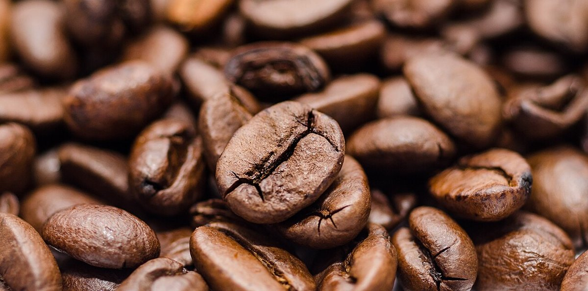
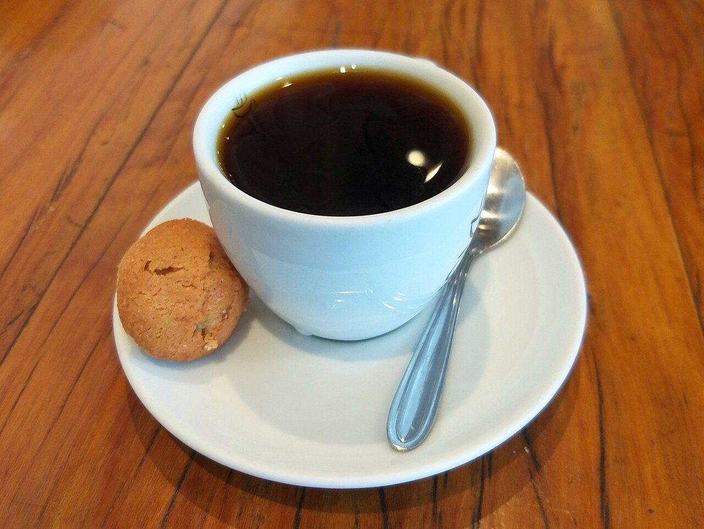
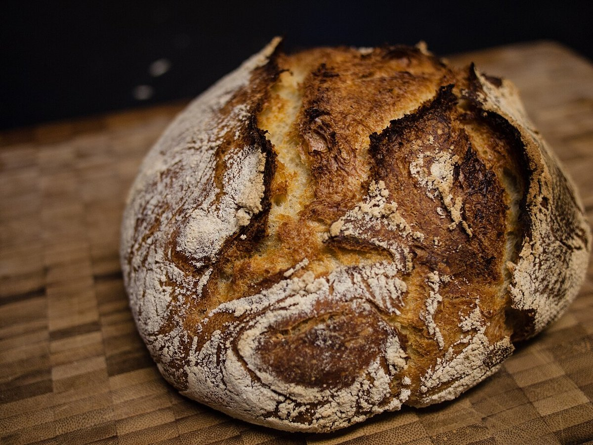

chicochicochicochicochicocafe
カフェ / 長野県伊那市
長野県伊那市長谷にあるカフェ「chico cafe」のご案内ページです。営業時間やメニューなど、詳しいことは準備中。まずはInstagramをのぞいてみてください。
制作側の連想
「ちいさい」から「おおきい」へ並べる
このページの作りは、制作側が屋号の綴りから連想したものです。お店の理念・由来とは無関係です。同じ「chico」の文字を、活字見本のように小さいサイズから少しずつ大きく並べました。写真も同じように、小さいものから大きいものへ階段状に置いています。
写真の階段(イメージ)
1段ずつ大きく。
写真はお店や伊那市のものではありません。国外または撮影地不明のフリー素材です。





ご案内
お店のこと(確認できたものだけ)
| 所在地 | 〒396-0404 長野県伊那市長谷中尾305-1 |
|---|---|
| 電話 | 090-2520-1721 |
| 営業時間 | 準備中 |
| 定休日 | 準備中 |
| ご予約 | 準備中 |
| 駐車場 | 準備中 |
| SNS | Instagram @chico__cafe |